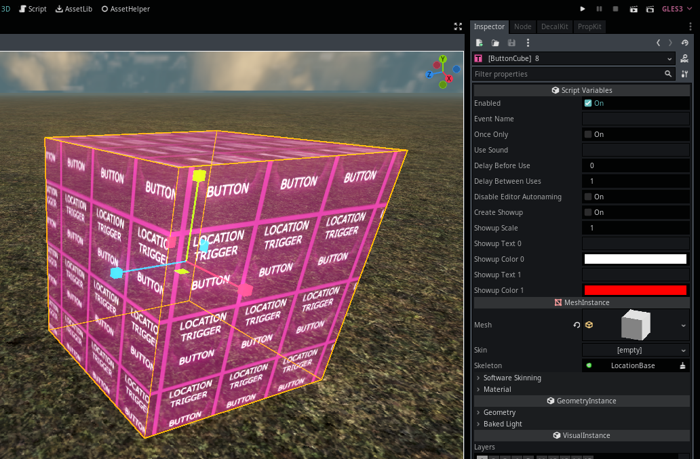

Module: location_logic
Documentation last edited: October 23, 2025 at 14:33 UTC
Description
So. This module. It's just some code, right?
.
├── autoload
│ ├── base_scene.gd
│ ├── light_queue.gd
│ └── location_events.gd
├── base.gd
├── button_trigger_cube.gd
├── button_trigger.gd
├── button_usable.gd
├── exit_trigger.gd
├── logic_base.gd
├── shader_compile
│ └── meshes_node.gd
├── trigger_cube.gd
└── trigger.gd
I mean look, it's just GDScript for the most part, you get what I mean? I'll describe this module by telling you what each file does in a "chronological" order of importance.
base.gd - LocationBase
The father of all locations. A special node. A very special one. It's also basically a shitty-written god class BUT HEEEY let's not be so negative about that. All locations must use
LocationBase
because I decided so. Really, it's making easier to control initialization of any location. Easier to put some settings. Easy to customize. It was easy to support too, when it wasn't a huge bunch of garbage. Honestly, I wish I could tell you more about this thing, but you better take a look into source code yourself.
autoload/location_events.gd - LocationEvents
A special singleton that is being the basis of all the location gameplay logic. Despite of its little source code size, it is exceptionally meaningful for functioning of this entire game.
logic_base.gd - LocationLogicBase
A location logic script base that you can use to define a logic script of a location.
"res://locations/scenes/logic/"
contains all the logic scripts and they aren't really used anymore because STs do the job better.
autoload/base_scene.gd - LocationBaseScene
A little funny
LocationBaseScene
singleton that allows you to get your current
LocationBase
by doing
LocationBaseScene.get_scene()
. Yes. That's why it exists. The only reason.
button_trigger_cube.gd - LocationButtonTriggerCube

A button that player can use. It is a cube that you can scale and put wherever you want.
button_trigger.gd - LocationButtonTrigger
A button that player can use. Unlike the cube version, you have to define start and end points to form a trigger. It's an older version, so it isn't really recommended to be used.
trigger_cube.gd - LocationTriggerCube
A trigger that player can enter/exit. It is a cube that you can scale and put wherever you want. It is emitting a location event upon entering/exiting.
trigger.gd - LocationTrigger
Same as
LocationTriggerCube
except you have to define start/end points. Again, it is older so it isn't really recommended for use.
light_queue.gd - LocationLightQueue
A singleton that works with optimization of light sources by hiding them if they are way too far.
button_usable.gd - LocationButtonTriggerUsable
Just a
Usable
-extended class that just calls
use
function in a button node.
Outdated: shader_compile/meshes_node.gd, exit_trigger.gd
Location Events

Location events are simple. Some code calls
LocationEvents.location_event_occured("thingy")
and then other code checks...
LocationEvents.connect("on_location_event", self, "thingy_checker")
# ...
func thingy_checker(event_name, args):
if event_name == "thingy":
Console.write_line("Wow thingy has happened")
Location event is just a string message that is sent over that "global event bus." It allows making scalable game systems easily, however it might be complicated to design levels with it.
General Information
Root directories list
assets, docs, src
Nodes
light_queue
LocationEvents
BaseScene
meshes_node
LocationBase
LocationButtonTriggerCube
LocationTriggerCube
Classes
ExitTrigger
LocationLogicBase
LocationButtonTriggerUsable
LocationTrigger
LocationButtonTrigger
Resources
None
Other Scripts
None